2025
Novembre
-
16 —
Psychologie, fantastique et romance
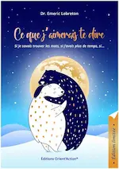
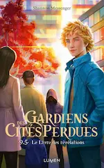
Ce que j’aimerais te dire si je savais trouver les mots, si j’avais plus de temps, si… (Emeric Lebreton), Gardiens des Cités perdues Tome 9.5 Le livre des révélations (Shannon Messenger), Un chat, deux sapins et beaucoup de complications (Myrtille Bastard) -
09 —
Poneys de Noël et autre histoire pas sur l’amour
Une famille cinq étoiles pour Noël, À la recherche de mon ange gardien, Belles-mères Noël, Mon cher Père Noël, La grande course de Noël, Un Noël hors du temps, Notre miracle de Noël, Le trésor de Noël, ♡ Une victoire pour Noël, La guerre des Rose
Octobre
-
25 —
Enquête surnaturelle, psychologie et histoires pour enfants
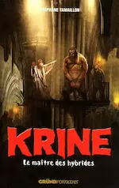
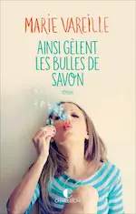
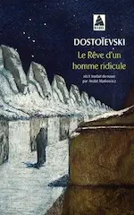
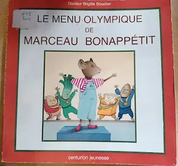
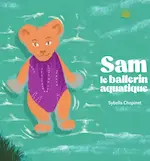
Krine : Le maître des hybrides (Stéphane Tamaillon), ♡ Ainsi gèlent les bulles de savon (Marie Vareille), Le rêve d’un homme ridicule (Dostoïevski), Le menu olympique de Marceau Bonappétit (Brigitte Boucher), Sam le ballerin aquatique (Sybella Chopinet) -
25 —
Comédies, comédies dramatiques, romance, aventure, thriller, horreur
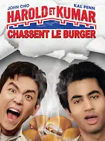
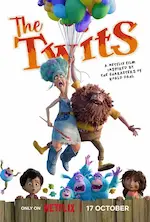
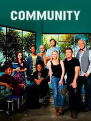
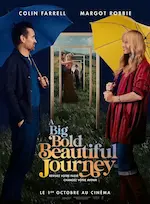
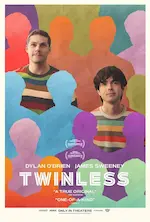
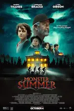
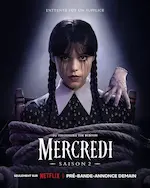
Harold et Kumar chassent le burger, Harold et Kumar s’évadent de Guantanamo, Le Joyeux Noël d’Harold et Kumar, Les deux Gredins, Community, A big bold beautiful journey, ♡ Caramelo, Chosen family, Twinless, HPI (saison 5), French lover, Monster summer, La disparue de la cabine 10, Mercredi (saison 2), Conjuring : L’heure du Jugement
Septembre
Août
-
17 —
Essai politique, romance en manga et enquêtes surnaturelles
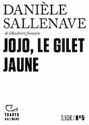
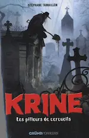
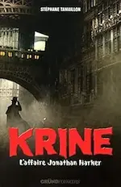
Jojo, le gilet jaune (Danièle Sallenave), Toi et moi, jamais (Mayu Sakai), Krine : Les pilleurs de cercueils, Krine : L'affaire Jonathan Harker (Stéphane Tamaillon) -
16 —
Romance, comédie et aventures
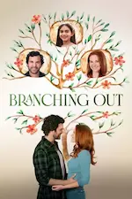
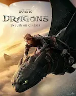
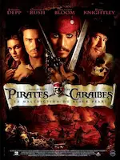
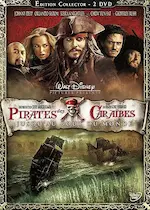
Betty : la chance de sa vie, Bridget Jones : folle de lui, Ruby à tout prix, Les condés, Dora : à la recherche du Sol Dorado, Dragons, Pirates des Caraïbes : la malédiction du Black Pearl, Pirates des Caraïbes : le secret du coffre maudit, Pirates des Caraïbes : jusqu'au bout du monde -
15 —
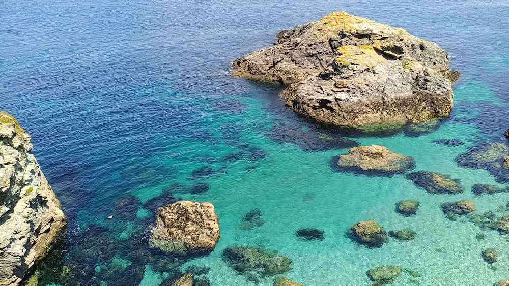
Vacances en Bretagne du 27/07/2025 au 12/08/2025
Juillet
Juin
-
09 —
Séries sur des Cold case, des urgences, une dystopie et de la comédie en animation
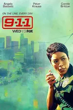
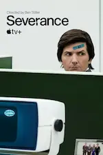
Black Snow, 9 ⸱ 1 ⸱ 1, Severance, Astérix et Obélix – Le combat des chefs - 09 — Balade à Thueyts (30/05/2025) et au Mont Dore (08/06/2025)
-
06 —
Magie, tranche de vie et aventures
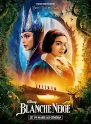
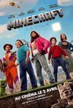
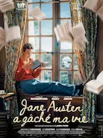
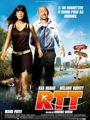
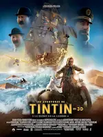
Blanche Neige, Minecraft – Le film, Jane Austen a gâché ma vie, RTT, Les aventures de Tintin – Le secret de la Licorne -
01 —
Bandes dessinées entre subtilité et sujet intense, roman jeunesse
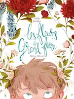
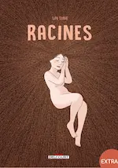
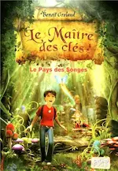
Les fleurs de grand frère (Gaëlle Geniller), ♡ Racines (Lou Lubie), Le maître des clés – Le pays des songes (Benoit Grelaaud)
Mai
Avril
- 19 — Essai à la guitare 🎶
-
15 —
Livres jeunesse
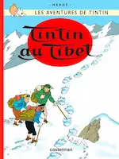
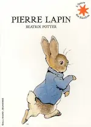
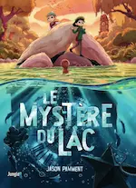
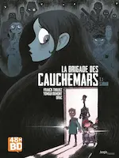
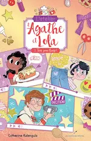
Tintin au Tibet (Hergé), Pierre Lapin (Beatrix Potter), ♡ Le mystère du lac (Jason Pamment), La brigade des cauchemars - T.1 Sarah (Franck Thilliez, Yomgui Dumont et Drac), L’atelier d’Agathe et Lola - 2.Tous pour Benji ! (Catherine Kalengula) -
12 —
Comédies, biopics et dystopies
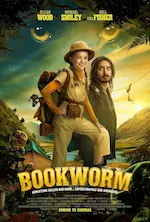
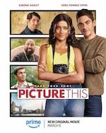
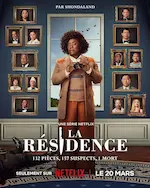
R.I.P.D. Brigade Fantôme, Bookworm, L’amour dans l’objectif, Paddington au Pérou, La Résidence, Better man, Un parfait inconnu, O’Dessa, Mickey 17
Mars
-
16 —
Bandes dessinées, magie et roman beaucoup trop long
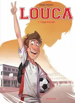
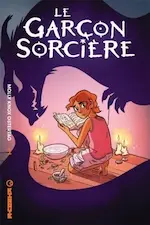
♡ Louca (Bruno Dequier), Le garçon sorcière (Molly Knox Ostertag), ♡ La maison aux mille détours (Diana Wynne Jones), La diagonale des Reines (Bernard Werber) -
13 —
Amour, famille et fantômes
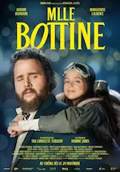
L’Amour ouf, ♡ Melle Bottine, Ghosts (UK) -
01 —
Grimm, CB Strike, Panda
♡ Grimm (intégrale), CB Strike (saison 6), Panda (saison 2)